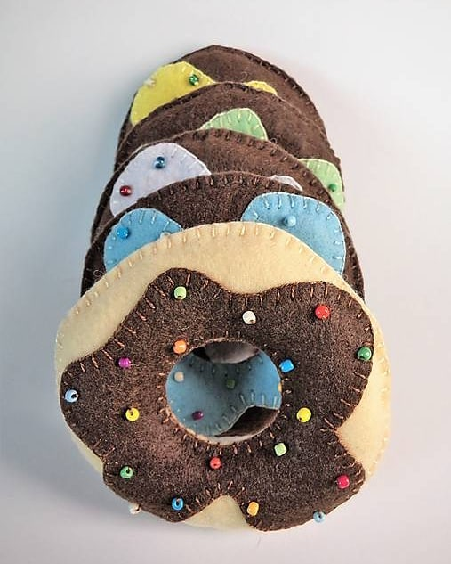

🍩 Máte radi šišky, ale bojíte sa kalórií? S tým je koniec! Táto sladká dobrota vás dobre naladí a nič vám pri nej nehrozí :-) 🍩 Všetky sú ručne ušité z filcu, zdobené filcovou polevou a namiesto cukrového posypu sú farebné korálky.
🍩 Dajú sa použiť na kopu rôznych vecí... ako originálna dekorácia do vašej cukrárne či pekárne, do detských kuchyniek a obchodíkov na hranie alebo ako ihelníček.
#sisky #donutky #kolaciky #sladkosti #mucniky #pekaren #hrackyzfilcu #sijemzfilcu